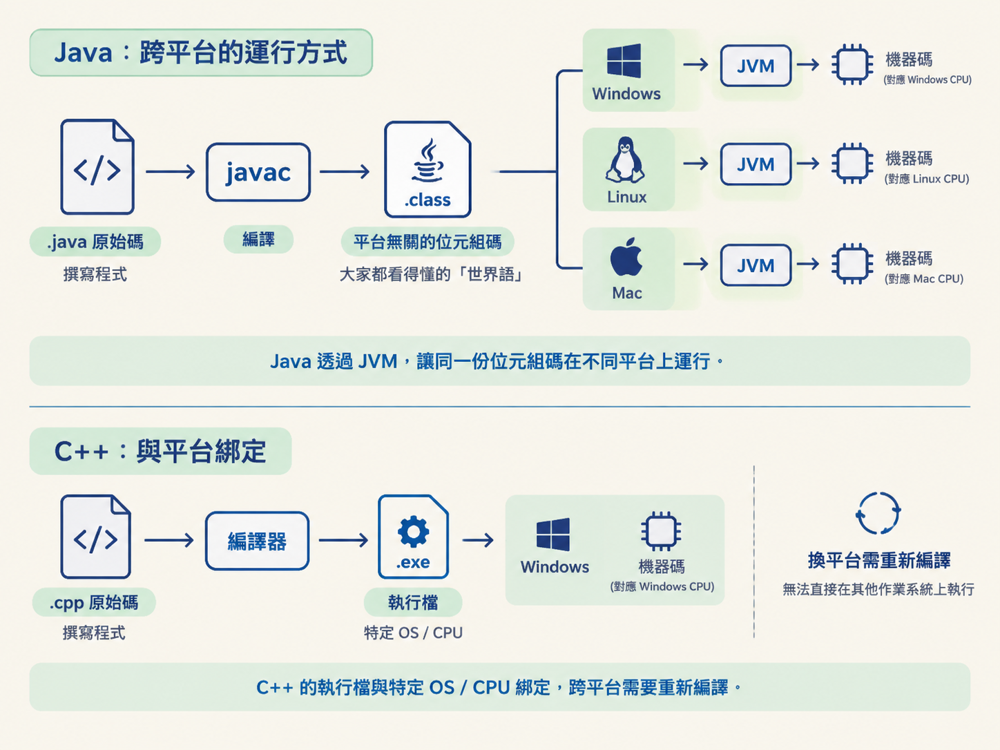
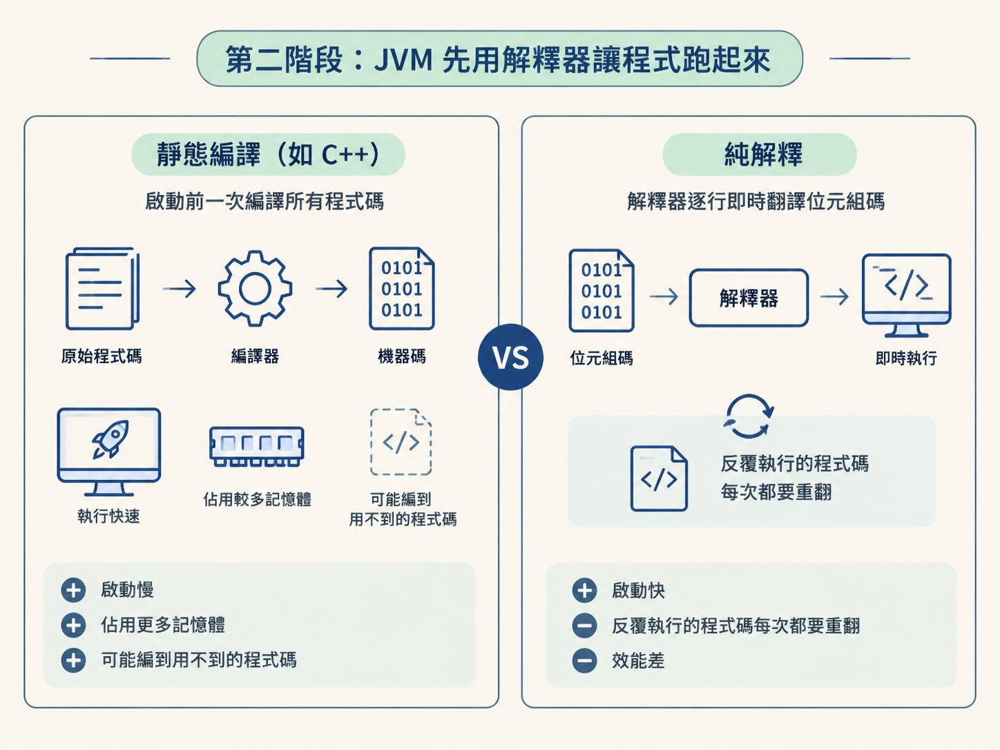
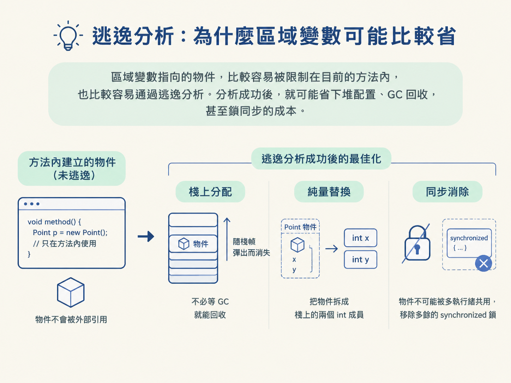

看完這一節，你應該能說清楚 .java 如何變成 .class，再變成 CPU 能執行的機器碼；也能解釋 JIT 為什麼存在、怎麼透過熱點偵測挑出值得優化的程式碼，以及逃逸分析為什麼可能讓區域變數更省資源。
面試時，你可能被問過：「Java 是編譯型語言，還是解釋型語言？」如果回答編譯型，問題馬上就來了：javac 明明只產出不能直接交給 CPU 執行的 .class 檔。如果回答解釋型，又很難說明 Java 為什麼能在長時間執行後，擁有接近 C++ 的效能。
這題背後其實是 Java 執行模型的地基。後面會遇到的堆、棧、GC、物件配置與類別載入，都和「程式碼最後如何變成 CPU 看得懂的指令」有關。這一層如果沒弄清楚，後面的名詞就像散落在桌上的拼圖，很難拼出完整畫面。
所以這一節要沿著 Java 程式走過的路來看：先從原始碼變成位元組碼，再由 JVM 在執行期間使用解釋器與 JIT 編譯器，將位元組碼轉成真正的機器碼。
javac 把原始碼編成平台無關的位元組碼Java 執行的第一步是編譯。你使用 javac 將 .java 檔編譯成 .class 檔，裡面裝的是位元組碼（bytecode）。它位在原始碼與機器碼之間，是一組 JVM 看得懂的中間指令。
這裡有個很重要的差別：位元組碼是給 JVM 執行的指令，不是給 CPU 直接執行的機器碼。
以 C++ 為例，編譯後的執行檔通常會和特定的作業系統、CPU 架構綁在一起。換到另一個平台，往往需要重新編譯。Java 的位元組碼則與平台無關；同一份 .class 可以放到 Windows、Linux 或 Mac，交給各自平台上的 JVM 執行。
因此，「一次編寫，到處運行」真正跨平台的是不同平台上的 JVM，不是 Java 程式本身。你可以把 javac 想成先把原始碼翻成一套大家都看得懂的世界語；等到了不同國家，再由當地的 JVM 翻譯成 CPU 能理解的語言。

程式啟動時，JVM 內部的解釋器（Interpreter）會讀取位元組碼，將它翻譯成目前平台的機器碼，再交給 CPU 執行。這種做法就是解釋執行。
解釋器的優點是啟動快。它不需要在程式開始前，把所有程式碼完整翻譯一遍；程式執行到哪裡，就翻譯到哪裡。像是同步口譯，講到一句就翻一句，不必先把整場演講的稿子全部準備好。
但這種方式也有明顯的代價：同一段程式碼每次執行時，都可能需要重新翻譯。對於會被反覆呼叫的方法或迴圈來說，這等於一直重做同一件事，效能自然比不上已經編譯好的機器碼。
那麼，反過來採用 C++ 的方式，在程式啟動前把所有程式碼都編成機器碼，是否就能解決問題？也不完全行得通。這樣會拖慢啟動時間，佔用更多記憶體，而且程式裡有許多函式可能只執行一兩次，甚至根本不會執行。為了這些程式碼預先付出完整的編譯成本，並不划算。

JIT（Just-In-Time compiler，即時編譯器）要解決的，就是啟動速度與長時間執行效能之間的取捨。
它的基本策略是：大部分只執行一兩次的程式碼，交給解釋器處理；少數被反覆呼叫、真正影響效能的程式碼，才值得花成本編譯。這些被頻繁執行的程式碼，就叫做熱點程式碼（hot code）。
JVM 會怎麼知道哪些程式碼是熱點？它會替方法或迴圈維護計數器。當某個方法的呼叫次數超過門檻，例如 Server 模式下預設約一萬次，JVM 就會將它標記為熱點。接著，JIT 會在背景把這段位元組碼編譯成本地機器碼，放進記憶體中的 Code Cache。
之後再次呼叫這個方法時，就可以直接執行已經編好的機器碼，不必再逐次解釋。
這就像一場會議裡的同步口譯：第一次聽到某段內容時，解釋器負責即時翻譯；如果發現這段內容接下來會不斷重複，JIT 就乾脆把整段講稿先翻好。這樣一來，程式啟動時不必等待全部編譯，執行時間拉長後，常用的部分又能跑得很快。
| 執行方式 | 怎麼做 | 優點 | 缺點 |
|---|---|---|---|
| 純解釋 | 每次執行都逐行翻譯 | 啟動快，不用預先編譯 | 反覆執行的程式碼會很慢 |
| 靜態編譯（如 C++） | 啟動前全部編成機器碼 | 執行速度快 | 啟動慢、佔用記憶體，也可能編譯到根本用不到的程式碼 |
| JIT 即時編譯 | 只在執行期間編譯熱點程式碼 | 兼顧啟動速度與熱點效能 | 需要額外付出計數與編譯的成本 |
JIT 的工作不只是把位元組碼翻成機器碼。它是在程式實際執行時才編譯，所以能觀察程式平常是怎麼跑的，再做一些 javac 僅靠原始碼難以完成的最佳化。
常見的最佳化包括以下幾種。
方法內聯（inlining）：如果一個小方法經常被呼叫，JIT 可能直接把方法內容複製到呼叫它的地方。這樣可以省下方法呼叫時進出棧的成本。這也是為什麼程式拆成許多小方法，不一定會帶來明顯的效能問題。
死程式碼消除：如果某段程式碼算出的結果從頭到尾都沒有被使用，JIT 就可能直接把這段程式碼移除，連計算都省下來。
逃逸分析（escape analysis）：JIT 會判斷一個物件是否會離開目前的方法，再決定是否能用更省成本的方式處理它。這也是下一段的重點。
先看「逃逸」到底是什麼。
假設你在方法 A 裡使用 new 建立一個物件。如果你把它當成回傳值 return 出去，或把它放進全域變數，讓方法 B 甚至其他執行緒也能取得，這個物件就算「逃逸」了。它已經不只屬於方法 A，JIT 就不能任意改變它的生命週期或儲存方式。
相反地，如果物件只在方法 A 裡使用，方法結束後外部沒有任何地方能取得它，這個物件就「沒有逃逸」。它的活動範圍被限制在目前方法內，JIT 因此有更多最佳化空間。
當 JIT 判定物件沒有逃逸時，可能採取幾種方式來降低堆的負擔：
x、y 兩個欄位的 Point 物件，最佳化後棧裡可能沒有完整的 Point，只剩下兩個 int 值。synchronized 鎖就可能被安全地移除。把這些機制連起來，就能理解為什麼常聽到「能用區域變數就用區域變數」。區域變數指向的物件，比較容易被限制在目前的方法內，也比較容易通過逃逸分析。分析成功後，就可能省下堆配置、GC 回收，甚至鎖同步的成本。

這背後是物件生命週期與 JIT 最佳化機制一起作用的結果，不是單純的程式風格偏好。
Java 是「半編譯、半解釋」：javac 先把原始碼編成平台無關的位元組碼，執行時由解釋器逐行翻譯，再由 JIT 把熱點程式碼即時編成機器碼，放入 Code Cache。JIT 還會做方法內聯、死程式碼消除與逃逸分析；其中逃逸分析能讓沒有離開方法的物件使用棧上分配、純量替換與同步消除，減少堆配置與 GC 成本。
到這裡，我們看懂了程式碼如何從原始碼一路走到機器碼。下一個自然的問題是：這些指令執行時，資料到底放在哪裡？下一節會打開 JVM 的執行時資料區，看看堆、棧與方法區各自負責什麼。